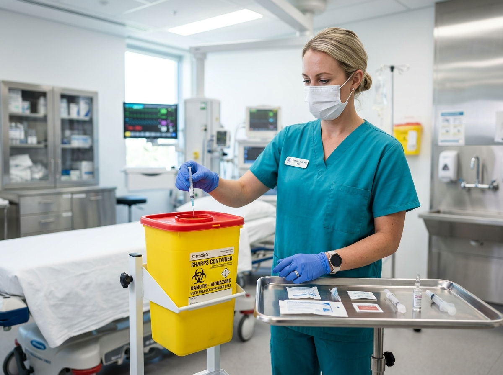

FDA-Cleared
Puncture-Resistant
Sharps Disposal
Sharps Waste Collection & Destruction
Complete compliant management of needles, syringes, scalpels, lancets, and sharp medical instruments from placement to certified destruction.
Each container is barcoded for full chain-of-custody tracking, and every destruction event generates an auditable Certificate of Destruction delivered directly to your dashboard.
1-quart to 18-gallon sizes
Automated pickup replacement
Get Started
Scheduled & On-Demand Pickup